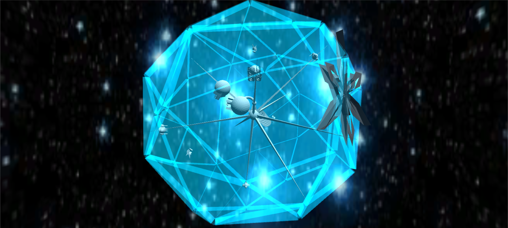

Le dernier chapitre «à l'assaut de l'oursin » se déroule dans la troisième carte.
Il’ynn et Il’yos ont décidé d’en finir avec ces attaques incessantes et s’attaquent directement à la base ennemie pour la détruire. Grâce à l’analyse de ICCARUS, ils apprennent que trois générateurs de bouclier protègent le cœur de la base.